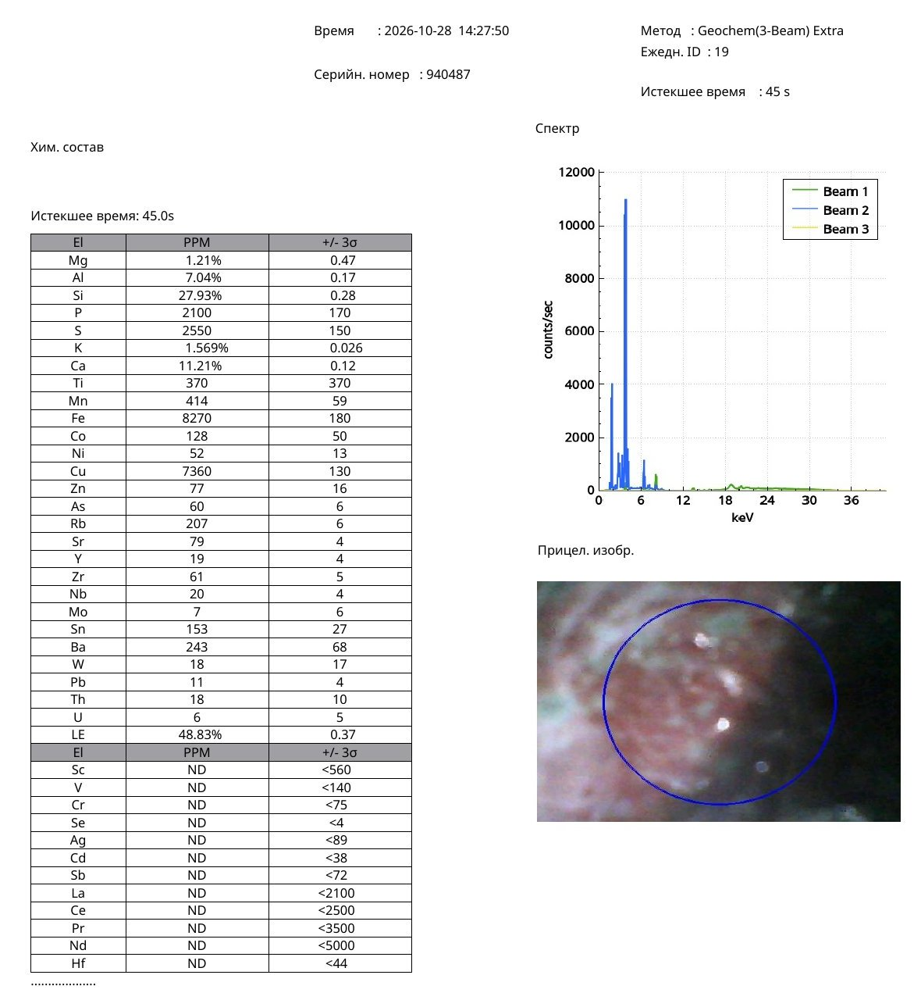
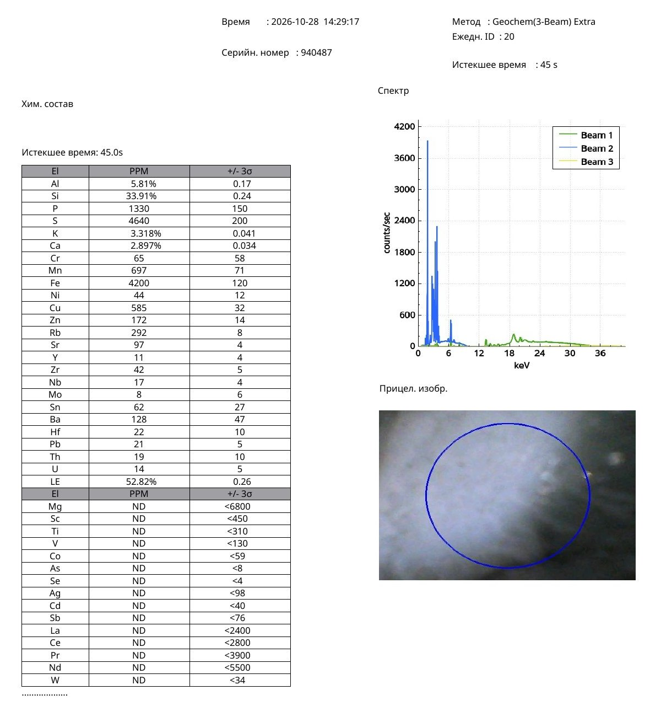

Research Article · Reference Object ro-qing-035
Kangxi Peach-Bloom Copper-Red Glaze: Green Moss-Like Specks and X-Ray Fluorescence Analysis of a Scholar’s Brush Washer
Professor Nona Dronova — Zenodo, published 30 October 2026 (v1) — Chinese Ceramic Archaeometry · Copper-Red Glaze Technology
Object: Chinese porcelain brush washer, Kangxi period (1662–1722), Qing dynasty.
Abstract
This study presents a non-destructive elemental analysis of a small Chinese porcelain brush washer belonging to the tradition of the scholar’s desk and attributed to the Kangxi period (1662–1722). Particular attention is given to its peach-bloom copper-red glaze (豇豆红, jiangdouhong), characterised by red areas, greenish transitions, and distinctive specks resembling moss or lichen.
Portable X-ray fluorescence spectroscopy (pXRF) was used to examine the red decorative area and the base of the vessel. A copper concentration of 7360 ppm was detected in the red area, compared with 585 ppm in the analysed area of the base, corresponding to an approximately 12.6-fold copper enrichment.
The red area also contained sulfur (2550 ppm), arsenic (60 ppm), and tin (153 ppm). These results are discussed in the context of published studies of historical Chinese copper-red glazes, in particular the study by Sun Jing and colleagues (1991) on the colouring mechanisms of peach-bloom glaze and a 2025 study of copper-red pigment recipes published in the Journal of the European Ceramic Society.
The results demonstrate a pronounced compositional heterogeneity between the decorative red surface and the base. The observed copper enrichment provides an experimental basis for studying the relationship between copper-bearing glaze technology and the characteristic red-and-green visual effects of Kangxi peach-bloom porcelain.
Keywords: Kangxi period; peach-bloom glaze; jiangdouhong; copper-red glaze; underglaze copper; green moss-like specks; scholar’s brush washer; portable X-ray fluorescence; Chinese porcelain; archaeometry.
1. Introduction
The Kangxi reign (1662–1722) represents an important period in the technological and artistic development of Chinese porcelain. During this era the imperial kilns at Jingdezhen achieved remarkable perfection in the production of high-temperature copper-red glazes.
Among the most notable types is peach-bloom, known in China as 豇豆红 (jiangdouhong), a glaze celebrated for its delicate pinkish-red tone, deeper crimson areas, greenish transitions, and small moss-like specks.
These visual characteristics are especially typical of small porcelain objects made for the scholar’s desk, including water pots, brush washers, and other implements used in calligraphy and painting.
The Metropolitan Museum of Art holds several Kangxi-period brush washers decorated with peach-bloom glaze. One example, accession number 29.100.352, shows the characteristic combination of reddish and greenish surface effects.
The coexistence of red and green is therefore a documented feature of this historical ceramic tradition.
This study examines the elemental composition of a small brush washer with similar visual characteristics. It focuses on the relationship between copper concentration, red colouring, and the formation of green specks resembling moss or lichen.
2. Description of the Object
The investigated object is a small Chinese porcelain brush washer belonging to the material culture of the scholar’s desk and dated to the Kangxi period.
Its decorative surface has several characteristic features:
- Areas of pinkish-red and deeper copper-red colour.
- Greenish transitions between the red areas.
- Irregular green specks resembling moss or lichen.
- A grey base with a reticulated pattern of glaze cracks.
The combination of red and green areas within a single decorative system is of particular importance.
In the Chinese ceramic literature, the green features characteristic of peach-bloom glaze are described as 绿苔点 (lütaidian), literally “green moss-like spots”.
These features are central to the technological interpretation of the vessel.
3. Analytical Methodology
The elemental composition of the vessel was examined by portable X-ray fluorescence spectroscopy (pXRF), a non-destructive analytical method.
The measurements are recorded in analytical report No. 940487 of 28 October 2026.
Instrument parameters:
- Analytical mode: Geochem (3-Beam) Extra.
- Acquisition time: 45 seconds per measurement.
- Sampling procedure: in situ, non-destructive.
- Measurement No. 19: red decorative area (miska kras).
- Measurement No. 20: base of the vessel (miska niz).
Elemental concentrations are given as reported by the instrument, in parts per million (ppm) and per cent.
The measurements reflect the elemental response of the analysed surface areas under the stated instrumental conditions.
4. Experimental Results
4.1. Elemental composition
Table 1. Comparative pXRF results for the red decorative area and the base of the brush washer.
| Element | Red area, No. 19 | Base, No. 20 |
|---|---|---|
| Cu (ppm) | 7360 | 585 |
| Fe (ppm) | 8270 | 4200 |
| S (ppm) | 2550 | 4640 |
| As (ppm) | 60 | ND, <8 |
| Sn (ppm) | 153 | 62 |
| Pb (ppm) | 11 | 21 |
| Ca (%) | 11.21 | 2.897 |
| K (%) | 1.569 | 3.318 |
| Si (%) | 27.93 | 33.91 |
| Al (%) | 7.04 | 5.81 |
| Mn (ppm) | 414 | 697 |
| Zn (ppm) | 77 | 172 |
ND = not detected above the stated instrumental detection limit.
Original pXRF Protocols — Olympus analyser, 28 October 2026

Measurement No. 19, red decorative area (miska kras). Click to open full size.

Measurement No. 20, base of the vessel (miska niz). Click to open full size.
4.2. Copper enrichment of the red area
The most significant analytical observation is the pronounced copper enrichment of the red decorative area.
The measured copper concentrations are:
- Red decorative area: 7360 ppm (0.736%).
- Base: 585 ppm (0.0585%).
The concentration ratio is:
7360 / 585 = 12.58
The red decorative area therefore shows approximately 12.6 times more copper than was recorded on the base.
This substantial difference indicates local copper enrichment in the red decorative area.
The results establish a direct analytical relationship between the visibly red area and an elevated copper content, consistent with the use of copper-bearing materials in historical red-glaze technology.
4.3. Associated elements
In addition to copper, the red decorative area contains sulfur, arsenic, and tin.
The principal concentrations are:
- Copper (Cu): 7360 ppm.
- Sulfur (S): 2550 ppm.
- Arsenic (As): 60 ppm.
- Tin (Sn): 153 ppm.
The presence of these elements is particularly important for studies of historical Chinese copper-red pigments and glazes, in which copper-bearing particles associated with sulfur and arsenic have been investigated.
A further notable feature is the calcium concentration of the red area, 11.21%, compared with 2.897% on the base.
The differences in calcium, potassium, silicon, and aluminium reflect the compositional heterogeneity of the examined ceramic surfaces.
5. Colouring Mechanisms of the Red and Green Areas of Peach-Bloom
5.1. The study by Sun Jing and colleagues (1991)
Of particular importance is a scientific study published in China:
Sun Jing, Chen Xianqiu, Ruan Meiling, and Zhao Dafeng. 桃花片铜红釉的着色机理 (The colouring mechanism of peach-bloom copper-red glaze). Journal of the Chinese Ceramic Society, 1991, No. 6, pp. 549–555.
The authors examined three characteristic areas of peach-bloom glaze:
- Red zones.
- Green moss-like specks.
- Red areas with a greenish tinge.
The study identified different mechanisms associated with the different visual areas.
The red colour was attributed to finely dispersed particles of metallic copper smaller than 2 µm.
The green moss-like specks were associated with a local enrichment of Cu²⁺ ions in the glassy glaze matrix.
Many microscopic copper-sulfide-bearing particles were found in the greenish transitional zones.
These results are highly relevant to the interpretation of the brush washer.
Its visual structure, comprising red fields, green transitions, and moss-like specks, corresponds to the principal colour areas examined in the 1991 study.
This publication thus provides a scientific basis for understanding the complex red-green appearance of historical peach-bloom glazes.
5.2. Copper and reduction firing
The formation of copper-red colour in high-temperature ceramic glazes is closely linked to the oxidation-reduction processes that take place during firing.
Under reducing conditions copper can form metallic particles, which produce the red colour.
Local differences in the oxidation state of copper, the distribution of particles, and the surrounding glassy matrix can lead to colour variation.
The result is a decorative surface that can contain red, pink, and green areas within a single glaze system.
In peach-bloom technology the distribution of copper through the thickness of the glaze is also important.
Historical examples can show a complex layered structure comprising transparent glaze and copper-bearing material.
The final visual effect is formed by the interaction of glaze composition, firing atmosphere, temperature, and copper distribution.
6. Comparison with Historical Copper-Red Pigment Studies
A recent study published in the Journal of the European Ceramic Society provides further technological context:
A new interpretation of the recipe and technological origin of Chinese copper-red pigment of the 14th–18th centuries. DOI: 10.1016/j.jeurceramsoc.2025.117535.
The researchers examined 27 samples of historical Chinese ceramics with underglaze copper-red painting and selected copper-red glazes.
The analytical methods included scanning electron microscopy with energy-dispersive X-ray spectroscopy (SEM-EDS), electron probe microanalysis with wavelength-dispersive spectroscopy (EPMA-WDS), and laser ablation inductively coupled plasma mass spectrometry (LA-ICP-MS).
The study identified copper-bearing microphases containing sulfur and arsenic.
The authors also discussed historical recipes using copper oxide and realgar.
The study of Kangxi-period material considered previously identified elemental associations, including As–Cu and Sn–Pb–Cu.
The present pXRF results are relevant to this discussion, because the red area of the investigated brush washer contains Cu, As, S, and Sn.
This correspondence of elements provides a useful basis for comparing the object with published historical copper-red technologies.
Elemental pXRF data establish the presence and relative abundance of elements, while the identification of specific compounds and microscopic phases requires complementary microstructural methods.
7. Museum Comparisons: Kangxi Scholar’s Brush Washers
Museum collections provide important comparative material for understanding the investigated vessel within the Kangxi ceramic tradition.
7.1. The Metropolitan Museum of Art, accession number 29.100.352
Brush washer, China, Jingdezhen, Kangxi mark and period (1662–1722).
Porcelain with peach-bloom glaze.
Diameter 11.4 cm; height 3.2 cm.
The museum records the characteristic reddish and greenish tones on the glazed surface.
This example shows the use of peach-bloom copper-red glaze on a small vessel intended for the scholar’s desk.
7.2. The Metropolitan Museum of Art, accession number 14.40.385
Brush washer, Kangxi mark and period, dated 1678–1688.
Diameter 12.1 cm.
This piece provides an important chronological reference within the Kangxi reign; its dating is based on the calligraphic features of the six-character Kangxi mark.
7.3. The Metropolitan Museum of Art, accession number 29.100.355
Brush washer, Kangxi period (1662–1722).
Porcelain with crackled peach-bloom glaze.
Diameter 12.2 cm; height 4.1 cm.
This museum example is particularly relevant because it shows a crackle effect within the peach-bloom glaze tradition.
The investigated vessel also has a grey base with a crackled surface.
Together, these museum objects demonstrate the established use of peach-bloom glaze for Kangxi scholar’s brush washers, including examples with complex red-green colouring and crackled glaze surfaces.
8. Discussion
The analytical results place the investigated brush washer within the technological context of Chinese high-temperature copper-red ceramics.
The first important finding is the substantial copper enrichment of the red decorative area, where the measured concentration is approximately 12.6 times higher than in the analysed base area.
The second finding is the presence of sulfur, arsenic, and tin in the red area, elements that have been discussed in scientific studies of historical Chinese copper-red pigment recipes.
The third point concerns the visual characteristics of the vessel. The combination of red areas, greenish transitions, and moss-like specks corresponds very closely to the characteristic surface effects examined by Sun Jing and colleagues in their 1991 study of peach-bloom glaze.
The fourth point concerns the cultural and functional context. Kangxi peach-bloom porcelain was closely associated with small objects made for the scholar’s desk, including brush washers.
The investigated object therefore represents a valuable example combining the study of surface morphology, non-destructive elemental analysis, and comparison with established ceramic research.
A further stage of photographic and microscopic documentation will illustrate more clearly the relationship between the red and green areas, the morphology of the moss-like specks, and the crackled surface of the base.
9. Conclusions
Portable X-ray fluorescence analysis was carried out on a small Chinese porcelain brush washer of the Kangxi period (1662–1722), showing peach-bloom copper-red colouring and green moss-like specks.
The investigation established the following results:
- The red decorative area contains 7360 ppm copper.
- The analysed base area contains 585 ppm copper.
- The copper enrichment of the red area is approximately 12.6 times relative to the base.
- Sulfur, arsenic, and tin were also detected in the red area.
- The visual combination of red colour, green transitions, and moss-like specks corresponds to the features described in scientific studies of peach-bloom glaze.
- Kangxi-period museum objects confirm the historical use of this glaze tradition on scholar’s brush washers.
This study makes an original contribution to the comparative study of Chinese copper-red glaze technology by providing non-destructive elemental data.
The combination of pXRF results with published studies of copper colouring mechanisms and museum comparanda presents a documented example of the characteristic red-green effects associated with peach-bloom porcelain.
Further microscopic and photographic documentation will complement the present study by recording the morphology of the green specks, the transitions between coloured areas, and the crackled base.
References
Sun, J., Chen, X., Ruan, M., & Zhao, D. (1991). 桃花片铜红釉的着色机理 [The colouring mechanism of peach-bloom copper-red glaze]. Journal of the Chinese Ceramic Society, No. 6, 549–555. https://jccsoc.cbpt.cnki.net/portal/journal/portal/client/paper/844eb0efd60bd44ee44fdbb867f813ab
A new interpretation of the recipe and technological origin of Chinese copper-red pigment of the 14th–18th centuries. (2025). Journal of the European Ceramic Society, 45(14), Article 117535. https://doi.org/10.1016/j.jeurceramsoc.2025.117535
The Metropolitan Museum of Art. Brush washer. Kangxi mark and period (1662–1722). Accession number 29.100.352. https://www.metmuseum.org/art/collection/search/49349
The Metropolitan Museum of Art. Brush washer. Kangxi mark and period, 1678–1688. Accession number 14.40.385. https://www.metmuseum.org/art/collection/search/42230
The Metropolitan Museum of Art. Brush washer. Porcelain with crackled peach-bloom glaze. Kangxi period. Accession number 29.100.355. https://www.metmuseum.org/art/collection/search/50930
Author’s analytical archive. (2026). Portable X-ray fluorescence analytical report No. 940487, 28 October 2026: Measurements 19 and 20. Unpublished primary analytical data.
Data Availability Statement
The primary analytical data are documented in portable X-ray fluorescence report No. 940487 of 28 October 2026, measurements 19 and 20. The report can be provided as supplementary material to this publication.